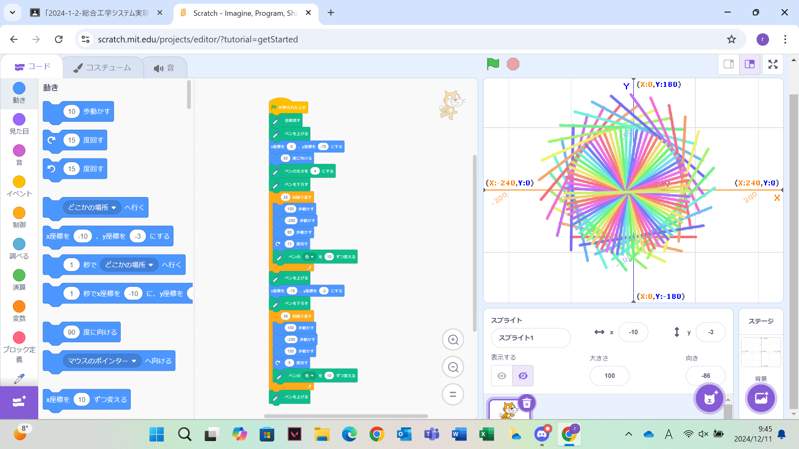
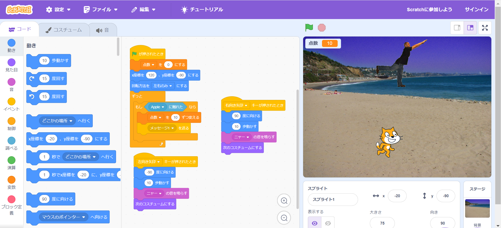

1週目のレポート ： 公大高専１年実習I-1
2b班41番 おしるこ
第1週目
1-1 サイエンスアート

1.内容
スクラッチを使って線を書くプログラム、スプライトを動かすプログラムを作成した。
また、それで学んだことを生かしてオリジナルのサイエンスアートを作成した。
2.感想
プログラムを用いることで様々な模様を表すことができると知り、驚いた。
慣れてくると、プログラムを変えることで様々な模様を描くことができて、おもしろかった。
1-2 ゲーム

1.内容
サイエンスアートのプログラム作成で学んだことを生かして、ネコ(スプライト)が落ちてくる りんご(スプライト2)を掴むというゲームプログラムを作成し、そこから敵キャラを追加したりと、 ゲームプログラムの改造を行った。
2.感想
サイエンスアートに比べて組むプログラムが多い分難しかったが、その分すごく楽しかった。
ゲームの改造の時が特に、自分が思ったように動いてくれないことがよくあって難しかった。
1-3 ホームページ作成
私のホームページ
1.内容
Githubを用いてホームページを作成した。ホームページ作成の方法、編集の方法、 アップロードの確認、画像のアップロード方法などを学習した。
2.感想
初めてプログラムのコードに触れたので、最初は困惑してすごく難しかったが、段々とわかるようになってきて面白かった。
スクラッチとは違いコードの書き換えやアップロードの確認、ホームページでの確認などやることが多く、難しかった。
各ページへのリンク
1週目のレポート
2週目のレポート
3週目のレポート
私のホームページ